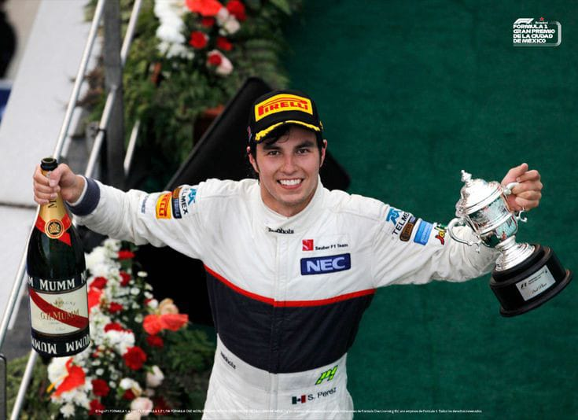
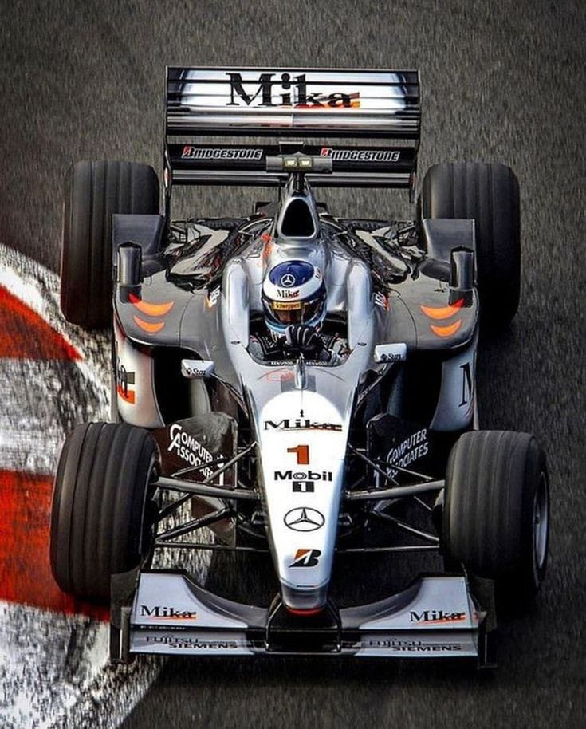
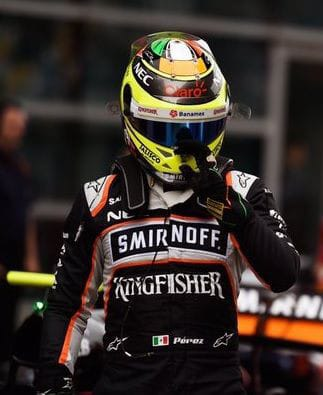
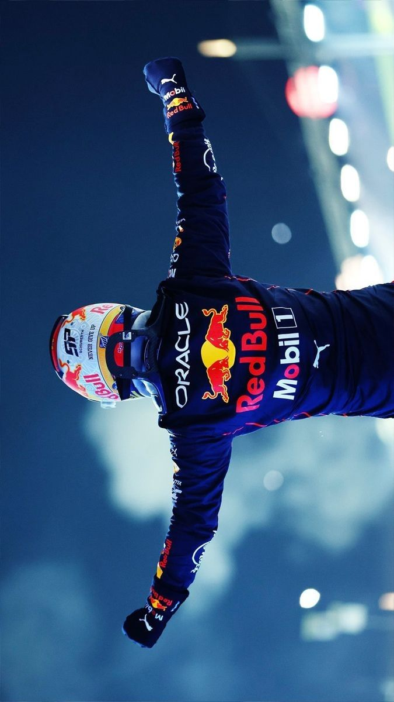

TRAYECTORIA CHECO PÉREZ
|
 Temporada 2011 - 2012 Sergio "Checo" Pérez tuvo su debut a la máxima categoría del automovilismo en 2011 con el equipo Sauber despues de buenos resultados en fórmula 3 y en la escudería TELMEX impulsado por Carlos Slim quien apoyo a checo desde sus inicios para convertirse en piloto de Fórmula 1, durante su estancia en la escudería logro tres podios en los grandes premios de malasia, italia y canadá. |
 Mclaren 2013 Luego de haber concluido su contrato con el equipo Sauber, el piloto mexicano firmó por un año con la escudería Mclaren quien afrontaba una mala racha por lo que checo no conisguió ningun podio. |
|
 Sahara Force India 2014 - 2018 En 2014 Sergio firmaba contrato con el equipo de Sahara Force India donde estuvo por cinco temporadas hasta que la escudería cambiara de nombre y dirección ejecutiva, durante estas temporadas el piloto mexicano logro cinco podios con los que sumaba ocho a su carrera consiguiendo superar la marca de siete podios del piloto mexicano Pedro Rodríguez. |
Racing Point 2018 - 2020 El equipo Force India presentó una banca rota y gracias a Checo Pérez el equipo fue comprado por el empresario Laurence Stroll quien renovó a la escudería reenombrandola como Racing Point donde Sergio estuvo por tres temporadas y en su último año logro estar en el podio en dos ocasiones incluída su primera victoria en la Fórmula 1. |
|
 Red Bull Racing 2021 - 2024 Cuando todo parecía estar terminado para el piloto mexicano, Christian Horner(CEO de redbull racing) quedó facinado tras la conducción de Checo en Shakir 2020, fue así como Checo Pérez llega a la escudería donde tendría la mejor temporada de su carrera sumando veintiocho podios, cinco victorias, tres pole postions en un total de noventa carreras disputadas, recibiendo el apodo de Sergio pérez "EL REY DE LAS CALLES". |